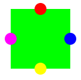

CompositeFigureTutorial

This is a simple tutorial that demonstrates how to use the CompositeFigure class. It instantiates a composite figure which contains a square (which represents the body of a component) and four circles (which represents "ports" on the component). The ports can be moved and scaled independently of the body, and when the body is scaled, the ports are scaled proportionally.
In general, it would be better to create a custom class for something like a component with port -- the purpose here is simply to illustrate how to use this class. The way that the composite figure is created is straight-forward:
CompositeFigure tc = new CompositeFigure();
Adding child figures to the composite figure is also straight-forward. For example,
Figure p1 = new BasicEllipse(150.0, 100.0, 20.0, 20.0, Color.red);
p1.translate(-10,-10);
tc.add(p1);
(The call to translate is there simply because it was easier to
figure out the coordinates of all the figures relative to their centers.
The translate() moves the center to the coordinates set in
the call to the constructor.)
In this tutorial we also introduce the notion of controllers and interactors. Any but the simplest interactive graphical applications should have a controller object that takes care of managing user interaction. The class diva.canvas.toolbox.BasicController is a very basic interaction controller that we use in some of the tutorials. It contains an object called a DragInteractor that is used to move figures about on the screen:
BasicController controller = new BasicController(graphicsPane);
Interactor defaultInteractor = controller.getSelectionInteractor();
To make each figure respond to the mouse, we just give it the interactor. For example,
p1.setInteractor(defaultInteractor);
In this example, an interactor is set up on each port so that they
can be dragged independently, and an interactor is set up on
the composite figure itself, so dragging on any figure that is
not part of the background itself will drag the whole figure and
its contents.
(Interactors are described in more detail in a later section.)